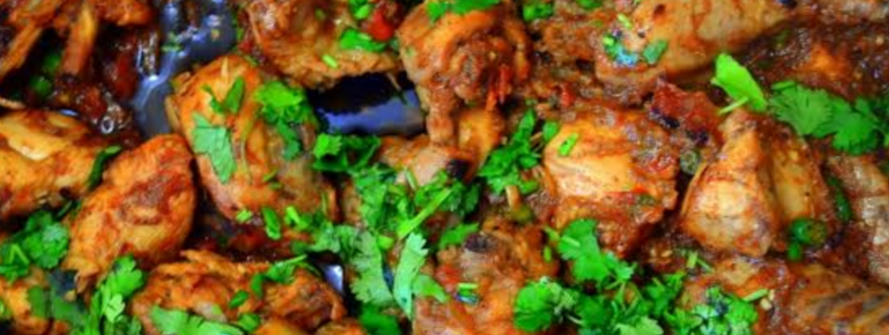

So What IS a Chicken Karahi?
In the context of the curry, a Chicken Karahi is a tomato and ginger based, thick masala curry which is though to originate from the Khyber Pakhtunkhwa region. The original, authentic method of making it is a very specific one. As a general rule, Karahis are made from a base of ginger, garlic and tomatoes and also contain fresh green chillis, julienne-cut raw ginger and coriander. It’s a rather thick, jammy gravy and concentrated in flavour – yum!
The traditional Karahi has undergone pretty major alterations over time. In order to bulk up the masala gravy and also cut the cost, onions have been added in so frequently in restaurants that many people know don’t even know the real recipe doesn’t contain onion. I’ve also seen variations use large chunks of red onion and capsicum much like a Chicken Jalfrezi. Modern day conveniences such as tinned tomatoes and pre-packaged jars of ginger and garlic are also pretty normal too. The recipe and instructions I’m sharing with you today is for the REAL DEAL Chicken Karahi. No bulking up with onions, everything is fresh, crisp and simple. It’s as close to the real deal as you can get, really. I want to break down EVERYTHING to you before proceeding on to the recipe, because if you can’t already tell, I am absolutely INSANE about getting Karahis right!

The Main Components of a Karahi
Just to lay thiis straight before we proceed with more information, this is what a Karahi consists of
- Your Meat - This could be lamb, mutton, beef, fish etc. For this we're using chicken obviously. In terms of what kind of chicken to get, any bone-in medium chicken will suffice. In this recipe, I've used a rather small chicken which was only 550g in total weight. If your chicken weighs more, please do make adjustments for the quantities of tomatoes, spices and oil
- Fresh Ginger - this is a very defining component of any Karahi. We use ginger in both the curry gravy as well as in the garnish in its raw form. Ginger is a very prominent flavour of a Karahi, so this is definitely not something to skimp on! Use a heavy hand with this!
- Fresh Garlic - another important component of the Karahi, however its flavour definitely does take a backseat in comparison to its aforementioned brother, ginger. Use a heavy hand with this too! We use quite a lot of garlic in Karahis to help bulk up the masala too, since there aren't any onions in here.
- Fresh Tomatoes - A Karahi is a tomato based curry. The original, traditional recipe does not contain onions. I will repeat this again (and again and again) - onions have been added into mainstream Karahis for the sole reason that it bulks up the masala on the cheap. My recipe doesn't use onions because quite frankly I'm a Karahi purist and if it contains onions, it ain't a Karahi to me!
- Fresh Green Chilli + Coriander - adds another fresh flavour element to the Karahi playing into the natural, crisp flavours of Karahis and also adds a wonderful fragrance.
- Spices - The spices in a Karahi are rather simple. This allows the natural flavours of the tomatoes, ginger, garlic etc all to shine!
.jpeg)
How to Make Chicken Karahi
The following is a basic outline of what we do to make a REAL, authentic Chicken Karahi. Don't worry, there’s more detailed instructions, pictures and exact quantities at the end!
- We start by frying the chicken in a generous amount of oil. We can’t really get away from the oil here, soz.
- We than add in a LOT of minced ginger and garlic. Please none of that pre-made, jarred stuff. FRESH ginger and garlic is KEY here. Remember I said Karahis have a huge emphasis on fragrance and natural flavours? These two ingredients are a MAJOR component of that. We want to fry these just enough for the raw smell to go away – under no circumstances should you allow this to burn because it will taint the flavour of the Karahi.
- We then go ahead and add all our tomatoes and spices. The tomatoes will release TONS of moisture and will break down into a beautifully jammy, thick gravy that will coat the chicken.
- We allow this mix to cook on high, stirring as needed to make sure it doesn’t catch at the bottom of the pan. We don’t put the lid on because we are concentrating the flavour. If we put the lid on, we won’t get that true Karahi look or flavour because we will be containing the moisture in our pan, not allowing the flavours to concentrate. The result will be a boiled/steamed chicken that looks more like a red chicken shorba and will likely break/flake. Not ideal for a Karahi!
- At about the 15-20 minute mark, the gravy will have thickened nicely, the oil will be separating around the edges, the chicken will be cooked and things will be looking almost done. At this point, you can add the chopped coriander and chillis, turn the heat to low and allow everything to simmer together again without the lid. It can simmer for 5 minutes at this point
- It’s all ready! Now you can garnish with your slices of ginger and serve as you please
.jpeg)